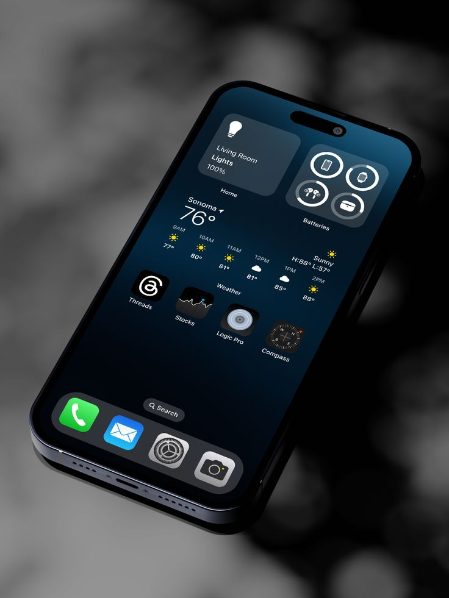

Arquitecturas de Software Móvil
Una guía completa sobre patrones, diseño y mejores prácticas para el desarrollo de aplicaciones modernas.
Comenzar Recorrido

Fundamentos
Aprende los conceptos básicos y por qué es crucial una buena arquitectura.
Patrones
Explora MVC, MVP, MVVM, MVI y Clean Architecture en profundidad.
Comparativas
Analiza ventajas, desventajas y casos de uso real para cada patrón.